Jack Craig on Tuesday, May 17, 2016
10:37:50

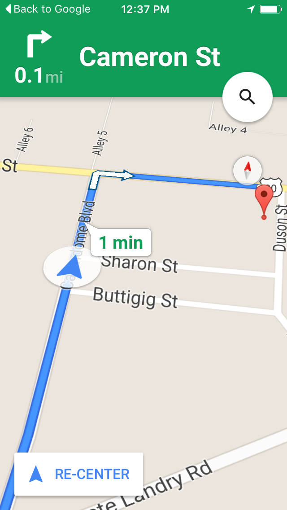10:37:53
This is a real street.
10:41:52
Some butt stuff prob.
11:55:30
Def.
18:19:50

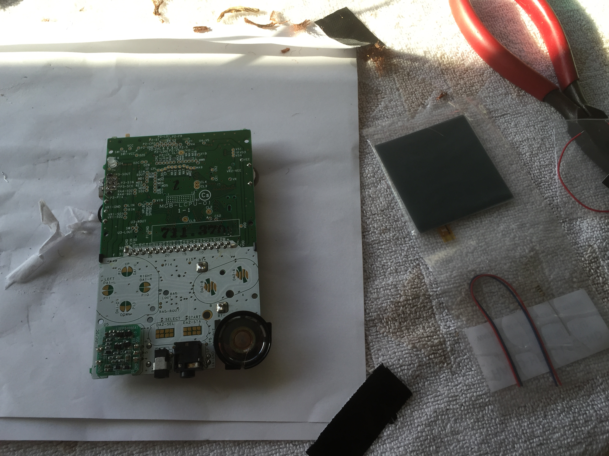18:19:51
Res do dis
18:25:11
Huh?
18:39:06
Da gameboy
18:39:36
Res do et
18:39:57
Oooh cool! How's it going?
18:40:28
Looks like he's got a new ex port in there!
18:41:29
Want me to send the instructional video hhl provides with the bivert chip?
18:41:54
It's set up for dmg but going it on a gbp just requires an extra wire or two
18:42:15
I watched it
18:42:20
Kinda annoying
18:42:37
Still trying to clean the damn LCD
18:42:44
Is it that gross?
18:43:04
The one in the green gbp seemed Monroe. Plus no dead pixels.
18:50:45
That's not the prob
18:50:58
Peeling off the backing left gross residue
18:51:05
I word
18:51:08
Ah
18:51:11
You should look up and see if anyone has had that prob
18:51:31
See if there's Any advice other than Goo gone or alcohol
18:53:24
Guy says most of it should come off with the film
18:53:31
If not it's almost a lost cause
18:54:01
Is there m, like, a lot of sticky shit?
19:04:16
Yeah most of it didn't
19:04:27
Sheeeyit
19:04:28
Didn't have this problem when k made our original ones
19:04:45
Yeah, guy said it happens sometime. Screens pretty much fucked
19:04:53
Really?
19:04:54
Shit
19:05:00
I can try the other one
19:05:04
Ends up leaving smudges
19:05:10
Nah, dead pixels
19:05:14
It only has a tiny bad spot in the corner
19:05:19
They're not dead pixels
19:05:27
It's just ink leakage
19:05:29
Not worth it. Wouldn't want a dead spot
19:05:53
Well I'll do it anyway, for practice if nothing else
19:06:03
And I'll show you a pick and let you decide
19:06:22
Nah, dude, don't waste a good backlight and invert lens
19:06:38
I'll just send a new gbp
19:07:10
Silver one was basically DOA anyway
19:09:38
Save the shell, lens, bivert chip, polarizer and lights, I'll just ship a new system you you get the board with a good ex port and screen
19:10:00
I bet if I get one in good shape the screen will be better
19:12:45
Well it's up you - it's your gameboy
19:12:55
I'll keep this logic board because I soldered in the power led
19:13:07
I'll call real quick
19:13:15
K
19:35:00
Oh yeah, curious to see the power switches
19:36:56

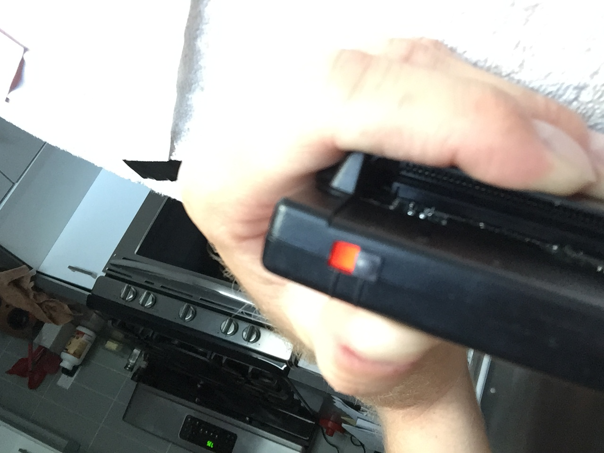19:37:24
Thada cool. Which originally came with that she'll?
19:37:35

19:37:41
Jesus
19:37:42
Idk what original was
19:37:45
Lol
19:37:53
That's a keeper pic
19:37:55
Red it is then
19:37:59
Ew. Yeah tho.
19:38:13
Anyway you can do the red sticker or just plain black
19:38:24
Is the sticker gross?
19:38:28
Like wrinkly
19:38:33
No
19:38:33
Or fades
19:38:39
Sticker it is then
19:38:59
Easy to swap out later if I want. Even I could do it
19:39:18

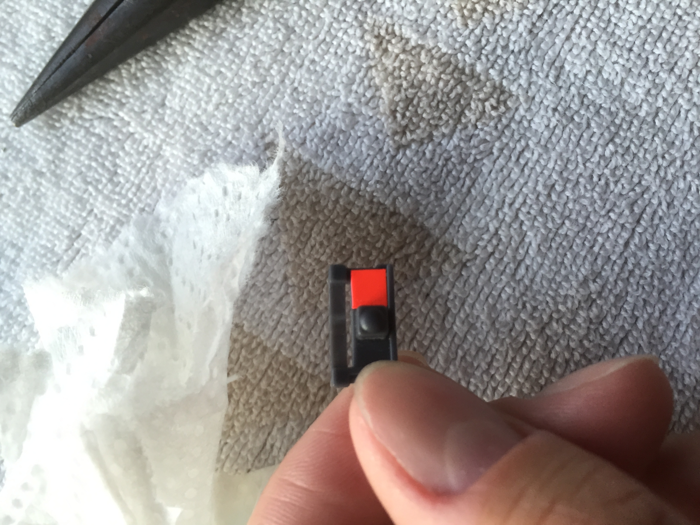19:39:29
I'f you have the right screen driver lol
19:39:47
Huh. Looks neat. Let's keep it
19:40:40
Its cool with the black case
19:41:10
Yeah I dig it. Retro vibe. Plus it's OEM flair, not just pikachu a painted on n shit.
19:56:32

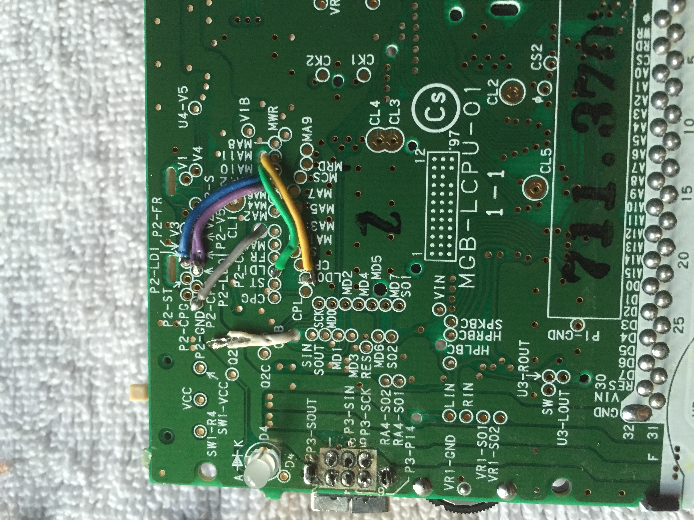19:56:32

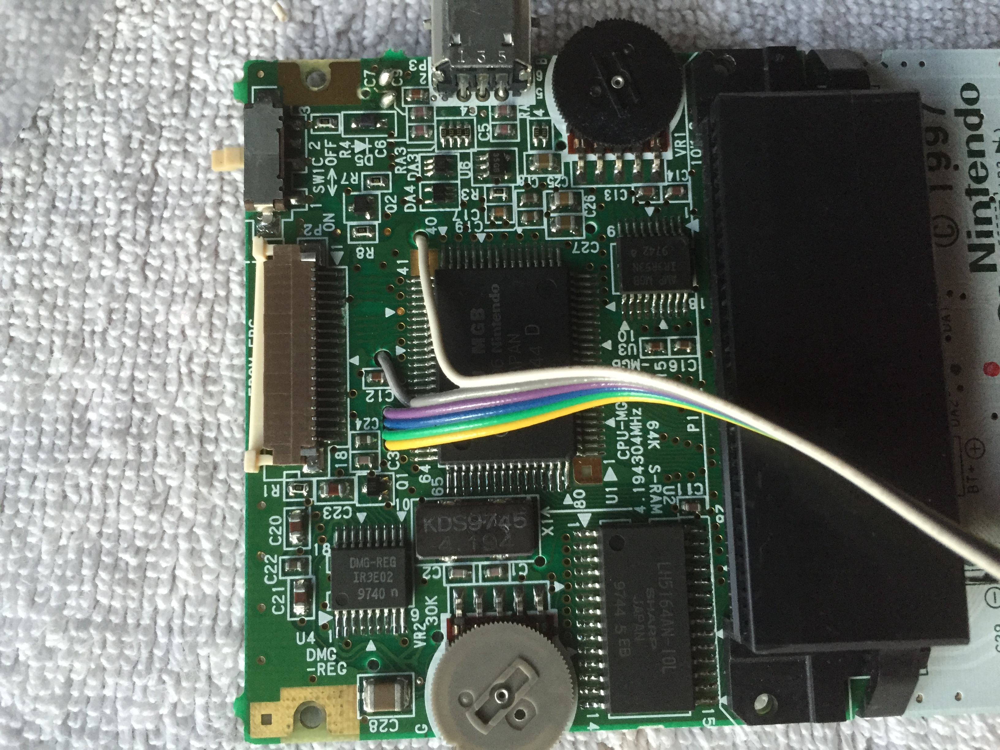19:56:33
Das ya boi
19:56:33
Dat boi is me
20:06:25
Oh shit whaddup...
20:21:18
For the bivert?
20:21:25
Looks crisp
20:21:45

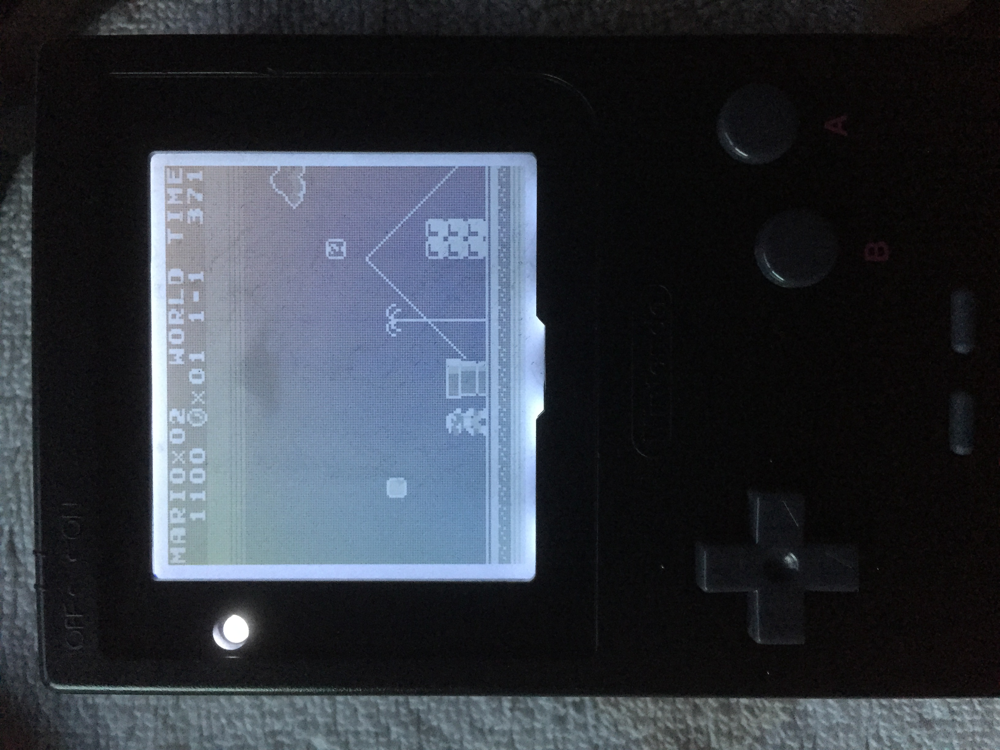20:22:33
Sharp! I take it this is before applying the polarizer?
20:39:32
Weird
20:39:53
Chip biverts, but the film makes it even darker
20:39:57
Do the look up
20:40:07
I think chip is ok
20:40:16
Tried film in multiple orientations.
20:40:24
It's just inverted
20:40:26
Rotated 90 degree
20:40:34
Duuuuuuh
20:40:39
Did that no work
20:40:49
Hmm
20:43:45
https://m.youtube.com/watch?v=-DaC3KNq9S8
20:43:54
Long, but it's a full walkthriugh
20:45:05

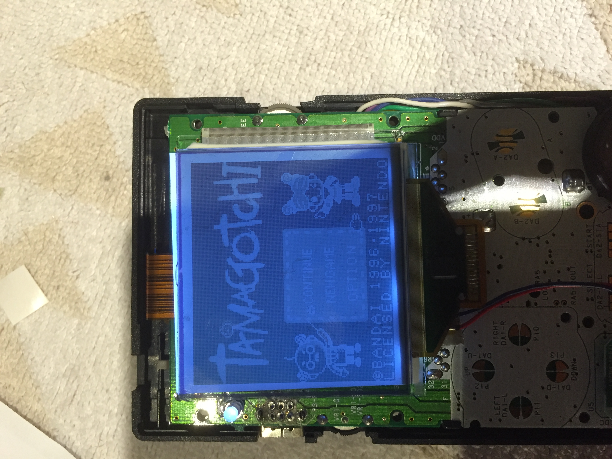20:45:17
Weird
20:45:25

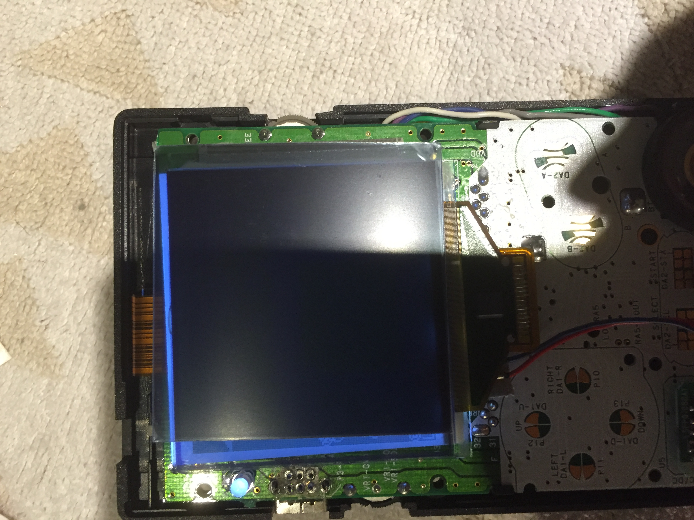20:45:45

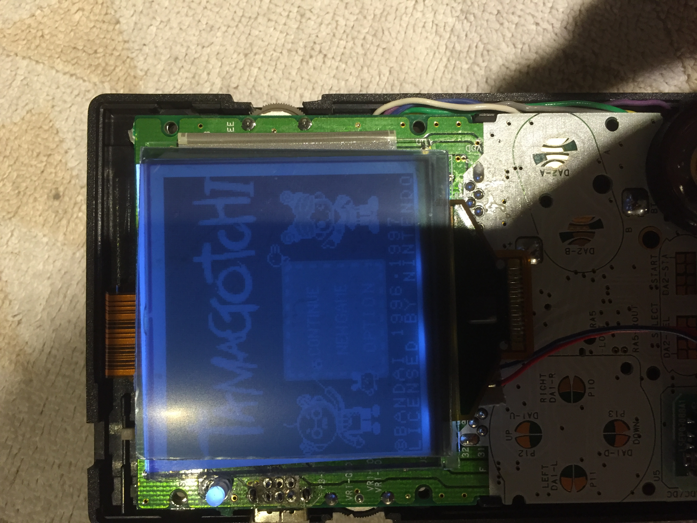20:45:48
https://m.reddit.com/r/Gameboy/comments/4g0hxv/gameboy_pocket_bivert_mod_why_is_my_screen/?ref=readnext
20:45:51
The film just inverts it MORE
20:46:03
Dude, rotate 90 like, more or something
20:46:10
Also tweak con steady dial
20:46:15
*contrast
20:47:25
As it should I think. Bivert chip may need a tweak then, since there's not really anything else you can do with the polarizer
20:47:44
It's either 90 degree or bust
20:47:54
It's clearly not that
20:48:13
Right, so possibly a wiring thing in the chip
20:48:23
Doesnt make any sense
20:48:28
Chip inverts it...
20:48:31
Ugh
20:48:36
Multi meter time
20:48:45
Mmm
20:49:16
https://gbatemp.net/threads/mgb-001-gameboy-pocket-backlight-unexpected-polarization-behavior.395887/
20:49:26
This msybe? Sounds like a similar issue
20:51:58
Apparently there's a stock polarizer along with the backing you peeled off. May not have beenfully removed, given how jsnk it is in there. Thus triple inverting
20:53:44
There was a sticker on the polarizer
20:53:47
Just took it off
20:53:49
No dice
20:53:53
Wtf
20:54:19
Must be a third layer of something stuck in there somewhere
20:54:25
That's my guess
20:54:33
It could be that
20:54:45
Cuz it's fucked anyway
20:55:17
Yeah. I suspect the stock polarizer is just goo-Ed in there somehow
20:55:46
Since the bivert chip seems to work and the film they supplied is fine
20:56:02
Basically just tri-very
20:56:27
Out of curiosity, without the new film is it just inverted?
20:56:56
Bc then it may be that the bivert chip isn't working but you've got the old and new film
20:57:12
Check the connections on the chip I guess ¯\_(ツ)_/¯
21:02:34
It's workinf
21:02:39
That was the first pic I sent
21:02:48
I think the screen is fucked
21:03:04
Took the polarizer off the poopy screen and it just not working at all for some reason
21:03:15
Fuck this shit im done for today
21:03:34
Yeah srsly. Seems like just a shitty screen
21:03:43
Thanks for putting in the time!
21:03:58
There's a new gbp headed your way!
21:04:47

21:04:50
U luv it
21:06:17

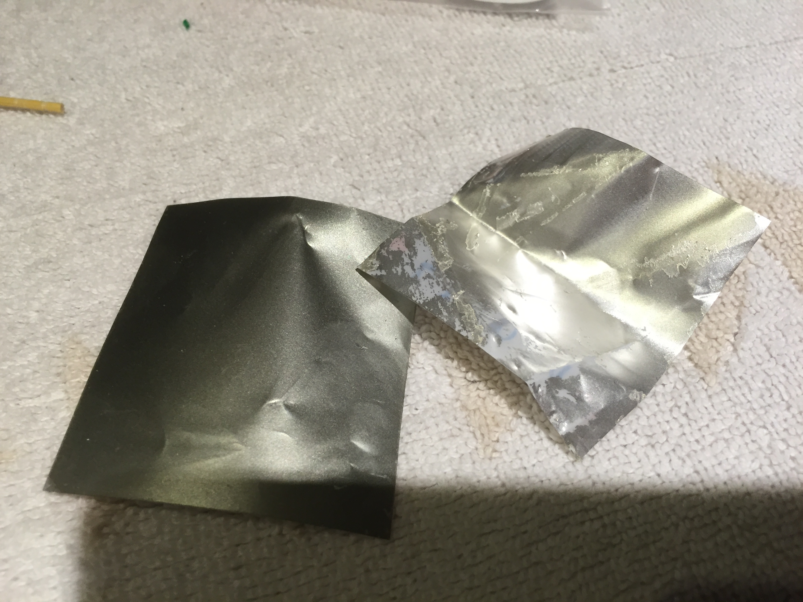21:06:47
I think we're right. That right one is from the first screen. And it's much lighter. So just have left the original poor layer
21:06:57
Polar*
21:09:28
Tru.
21:11:05
🌝
21:14:13
The original us still stuck on there? Yeh, makes sense.
21:15:12
Agh, yeah
21:15:19
So it just didn't peel off?
21:17:56
Everything else looks good, so we'll see what happens when the new screen shows up
21:24:57
Yeah this situation is fucked
21:25:08
More gamboys for the collection!!
21:25:34
Totally. Gonna be a sizable jank collection when it's All done. Plenty of spare parts
21:26:17
Btw, if it's really not hard you could later swap in the blotchy screen from the silver one to see if that works
21:37:55
Yeah that's the one I just took the film off of
21:38:10
I think I fucked the ribbon cable because it's not showing anything
21:38:17
Soooo yeah
21:38:18
Hmm. Yeah
21:38:35
Well you can just start over in the new one.
21:38:43
Third times the charm